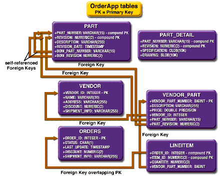
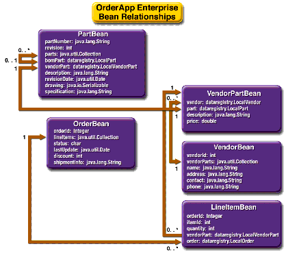

www.netbeans.org
Feedback
java.sun.com
|
Download
www.netbeans.org |
|
API
Feedback java.sun.com |
Advanced CMP Topics: The Order Example
The
Orderapplication is an advanced CMP example. It contains entity beans that have self-referential relationships, one-to-one relationships, unidirectional relationships, unknown primary keys, primitive primary key types, and composite primary keys.To open the project, choose File
Open Project (Ctrl-Shift-O). In the file chooser, go to <
INSTALL>/j2eetutorial14/examples/ejb/cmporder/, select the Order directory, and choose Open Project.Structure of Order
Orderis a simple inventory and ordering application for maintaining a catalog of parts and placing an itemized order of those parts. It has entity beans that represent parts, vendors, orders, and line items. These entity beans are accessed using a stateful session bean that holds the business logic of the application. A simple command-line client adds data to the entity beans, manipulates the data, and displays data from the catalog.The information contained in an order can be divided into different elements. What is the order number? What parts are included in the order? What parts make up that part? Who makes the part? What are the specifications for the part? Are there any schematics for the part?
Orderis a simplified version of an ordering system that has all these elements.
Orderconsists of two modules:Order, an enterprise bean JAR file containing the entity beans, the stateful session bean that accesses the data in the entity beans, the support classes, and the database schema file; andOrderClient, the application client that populates the entity beans with data and manipulates the data, displaying the results in a terminal.Figure 8-3 shows
Order's database tables.

Figure 8-3 Database Tables in
OrderBean Relationships in Order
The
Orderexample application shows how to set up one-to-many and many-to-many relationships between entity beans.Orderdemonstrates two additional types of entity bean relationships (see Figure 8-4): one-to-one and self-referential relationships.

Figure 8-4 Relationships between Entity Beans in
OrderSelf-Referential Relationships
A self-referential relationship is a relationship between container-managed relationship fields (CMR) in the same entity bean.
PartBeanhas a CMR fieldbomPartthat has a one-to-many relationship with the CMR fieldparts, which is also inPartBean. That is, a part can be made up of many parts, and each of those parts has exactly one bill-of-material part.The primary key for
PartBeanis a compound primary key, a combination of thepartNumberandrevisionfields. It is mapped to thePART_NUMBERandREVISIONcolumns in thePARTtable.One-to-One Relationships
PartBeanhas a CMR field,vendorPart, that has a one-to-one relationship withVendorPartBean's CMR fieldpart. That is, each part has exactly one vendor part, and vice versa.One-to-Many Relationship Mapped to Overlapping Primary and Foreign Keys
OrderBeanhas a CMR field,lineItems, that has a one-to-many relationship withLineItemBean's CMR fieldorder. That is, each order has one or more line item.
LineItemBeanuses a compound primary key that is made up of theorderIdanditemIdfields. This compound primary key maps to theORDER_IDandITEM_IDcolumns in theLINEITEMdatabase table.ORDER_IDis a foreign key to theORDER_IDcolumn in theORDERStable. This means that theORDER_IDcolumn is mapped twice: once as a primary key field,orderId; and again as a relationship field,order.Unidirectional Relationships
LineItemBeanhas a CMR field,vendorPart, that has a unidirectional many-to-one relationship withVendorPartBean. That is, there is no CMR field in the target entity bean in this relationship.Primary Keys in Order's Entity Beans
The
Orderexample uses more complicated primary keys than doesRoster.Unknown Primary Keys
In
Order,VendorPartBeanuses an unknown primary key. That is, the enterprise bean does not specify a primary key field, and usesjava.lang.Objectas the primary key class.The
LocalVendorPartHomeinterface'sfindByPrimaryKeymethod is defined as follows:See Generating Primary Key Values for more information on unkown primary keys.
Primitive Type Primary Keys
VendorBeanuses a primary key that is a Java programming language primitive type, anint. To use a primitive type as the primary key, you must create a wrapper class.VendorKeyis the wrapper class forVendorBean.The wrapper primary key class has the same requirements as described in The Primary Key Class. This is the
VendorKeywrapper class:package dataregistry; public final class VendorKey implements java.io.Serializable { public int vendorId; public boolean equals(Object otherOb) { if (this == otherOb) { return true; } if (!(otherOb instanceof VendorKey)) { return false; } VendorKey other = (VendorKey) otherOb; return (vendorId == other.vendorId); } public int hashCode() { return vendorId; } public String toString() { return "" + vendorId; } }Compound Primary Keys
A compound primary key is made up of multiple fields and follows the requirements described in The Primary Key Class. To use a compound primary key, you must create a wrapper class.
In
Order, two entity beans use compound primary keys:PartBeanandLineItemBean.
PartBeanuses thePartKeywrapper class.PartBean's primary key is a combination of the part number and the revision number.PartKeyencapsulates this primary key.
LineItemBeanuses theLineItemKeyclass.LineItemBean's primary key is a combination of the order number and the item number.LineItemKeyencapsulates this primary key. This is theLineItemKeycompound primary key wrapper class:package dataregistry; public final class LineItemKey implements java.io.Serializable { public Integer orderId; public int itemId; public boolean equals(Object otherOb) { if (this == otherOb) { return true; } if (!(otherOb instanceof LineItemKey)) { return false; } LineItemKey other = (LineItemKey) otherOb; return ((orderId==null?other.orderId==null:orderId.equals (other.orderId)) && (itemId == other.itemId)); } public int hashCode() { return ((orderId==null?0:orderId.hashCode()) ^ ((int) itemId)); } public String toString() { return "" + orderId + "-" + itemId; } }Entity Bean Mapped to More Than One Database Table
PartBean's fields map to more than one database table:PARTandPART_DETAIL. ThePART_DETAILtable holds the specification and schematics for the part.Finder and Selector Methods
VendorBeanhas two finder methods:findByPartialNameandfindByOrder. ThefindByPartialNamemethod searches through the vendor list for matches to a partial name.findByOrderfinds all vendors for a particular order.
LineItemBeanhas one finder method,findAll, which finds all line items.
OrderBeanhas one selector method,ejbSelectAll, which returns all orders.
VendorPartBeanhas two selector methods.ejbSelectAvgPricereturns the average price of all parts from a vendor.ejbSelectTotalPricePerVendorreturns the price of all the parts from a particular vendor.Selector methods cannot be accessed outside a bean instance because the selector methods are not defined in the bean interface. If you are using a selector method to return data to a caller, the selector method must be called from a home or business method. In
Order, theLocalVendorPartHome.getAvgPricemethod returns the result of theejbSelectAvgPricemethod inVendorPartBean.The return type of a selector query is usually defined by the return type of the
ejbSelectmethods. You must specify the return type asRemoteif the method returns a remote interface or ajava.util.Collectionof remote interfaces. If the return type is a local interface or ajava.util.Collectionof local interfaces, set the return type toLocal. If the return type is neither a local nor a remote interface, nor a collection of local or remote interfaces, do not set the return type. TheOrderBean.ejbSelectAllmethod returns a collection of local interfaces.VendorPartBean.ejbSelectAvgPriceandVendorPartBean.ejbSelectTotalPricePerVendorreturn aDouble, so the return type is set toNone.Using Home Methods
Home methods are defined in the home interface of a bean and correspond to methods named
ejbHome<METHOD>in the bean class. For example, a methodgetValue, defined in theLocalExampleHomeinterface, corresponds to theejbHomeGetValuemethod implemented inExampleBean. TheejbHome<METHOD>methods are implemented by the bean developer.
Orderuses three home methods:OrderLocalHome.adjustDiscount,VendorPartLocalHome.getAvgPrice, andVendorPartLocalHome.getTotalPricePerVendor. Home methods operate on all instances of a bean rather than on any particular bean instance. That is, home methods cannot access the container-managed fields and relationships of a bean instance on which the method is called.For example,
OrderLocalHome.adjustDiscountis used to increase or decrease the discount on all orders.Cascade Deletes in Order
Entity beans that use container-managed relationships often have dependencies on the existence of the other bean in the relationship. For example, a line item is part of an order, and if the order is deleted, then the line item should also be deleted. This is called a cascade delete relationship.
In
Order, there are two cascade delete dependencies in the bean relationships. If theOrderBeanto which aLineItemBeanis related is deleted, then theLineItemBeanshould also be deleted. If theVendorBeanto which aVendorPartBeanis related is deleted, then theVendorPartBeanshould also be deleted.BLOB and CLOB Database Types in Order
The
PART_DETAILtable in the database has a column,DRAWING, of typeBLOB.BLOBstands for binary large objects, which are used for storing binary data such as an image. TheDRAWINGcolumn is mapped to the container-managed fieldPartBean.drawingof typejava.io.Serializable.
PART_DETAILalso has a column,SPECIFICATION, of typeCLOB.CLOBstands for character large objects, which are used to store string data too large to be stored in aVARCHARcolumn.SPECIFICATIONis mapped to the container-managed fieldPartBean.specificationof typejava.lang.String.
Note: You cannot use a
BLOBorCLOBcolumn in theWHEREclause of a finder or selector EJB QL query.
Building and Running the Order Example
In order to run the
OrderClientexample, you have to build and deploy theOrderEJB module and create the database tables.Building and Deploying the EJB Module
You can build and deploy the module in one action.
The IDE does all of the following:
- Compiles the EJB module's sources and builds the EJB JAR file. You can view the build output in the project's
buildanddistdirectories in the Files window.- Registers the JDBC connection pool and datasource on the server.
- Undeploys the module if it is already deployed to the server.
- Deploys the module to the server.
Running the OrderClient Example
- In the IDE, choose Tools
- Create the database tables by running the
create.sqlscript.
- Make sure that the
appsrv.rootproperty in your<INSTALL>/j2eetutorial14/examples/file points to the location of your local Application Server installation.- In a terminal window, go to this directory:
<INSTALL>/j2eetutorial14/examples/ejb/order/- Type the following command, which runs the
create.sqlscript:
asant -buildfile create-db.xml- Choose File
<INSTALL>/j2eetutorial14/examples/ejb/order/, select theOrderClientdirectory, and choose Open Project.- The project needs to know the location of some JAR files on its classpath and the Order project. Right-click the OrderClient project and choose Resolve Reference Problems. Select the
"Order" project could not be found messageand click Resolve. In the file chooser, select either the completed Order project in<INSTALL>/j2eetutorial14/examples/ejb/cmporder/or the project you created and click OK.- Select the
"appserv-rt.jar" file/folder could not be foundmessage and click Resolve. Navigate to thelibdirectory in your application server installation, selectappserv-rt.jar, and click OK. The IDE automatically resolves the location ofj2ee.jar. Click Close.- Right-click the OrderClient project and choose Run Project. The client should display the following:
Cost of Bill of Material for PN SDFG-ERTY-BN Rev: 7: $241.86
Cost of Order 1111: $664.68
Cost of Order 4312: $2,011.44
Adding 5% discount
Cost of Order 1111: $627.75
Cost of Order 4312: $1,910.87
Removing 7% discount
Cost of Order 1111: $679.45
Cost of Order 4312: $2,011.44
Average price of all parts: $117.55
Total price of parts for Vendor 100: $501.06
Ordered list of vendors for order 1111
200 Gadget, Inc. Mrs. Smith
100 WidgetCorp Mr. Jones
Found 6 line items
Removing Order
Found 3 line items
Found 1 out of 2 vendors with 'I' in the name:
Gadget, Inc.
|
Download
www.netbeans.org |
|
API
Feedback java.sun.com |
All of the material in The J2EE(TM) 1.4 Tutorial is copyright-protected and may not be published in other works without express written permission from Sun Microsystems.